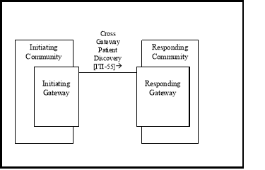
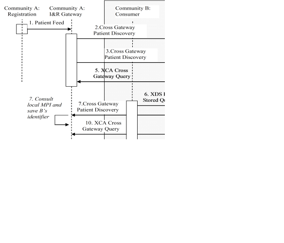
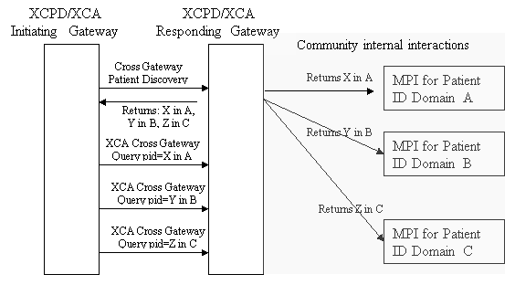

IHE IT Infrastructure (ITI)
Technical Framework
Revision 16.0 – Final Text
The Cross-Community Patient Discovery (XCPD) Profile supports the means to locate communities that hold patient relevant health data and the translation of patient identifiers across communities holding the same patient’s data. A community is defined as a group of facilities/enterprises that have agreed to work together using a common set of policies for the purpose of sharing health information within the community via an established mechanism. Facilities/enterprises may host any type of healthcare application such as EHR, PHR, etc. A community is identifiable by a globally unique id called the homeCommunityId. Membership of a facility/enterprise in one community does not preclude it from being a member in another community. Such communities may be XDS Affinity Domains which define document sharing using the XDS Profile or any other communities, no matter what their internal sharing structure.
Figure 27.1-1 shows the actors directly involved in the XCPD Integration Profile and the relevant transactions between them. Other actors that may be indirectly involved due to their participation in XCA, XDS, PIX, PDQ, etc. are not necessarily shown.

Figure 27.1-1: XCPD Actor Diagram
Table 27.1-1 lists the transactions for each actor directly involved in the XCPD Profile. In order to claim support of this Integration Profile, an implementation must perform the required transactions (labeled “R”). Transactions labeled “O” are optional. A complete list of options defined by this Integration Profile and that implementations may choose to support is listed in Section 27.2.
Table 27.1-1: XCPD Integration Profile - Actors and Transactions
|
Actors |
Transactions |
Optionality |
Section |
|
Initiating Gateway |
Cross Gateway Patient Discovery [ITI-55] |
R |
ITI TF-2b: 3.55 |
|
Responding Gateway |
Cross Gateway Patient Discovery [ITI-55] |
R |
ITI TF-2b: 3.55 |
The Initiating Gateway supports all outgoing inter-community communications. XCPD uses this actor to initiate the Cross Gateway Patient Discovery [ITI-55]. The Initiating Gateway is required to support synchronous transaction messaging and may declare an option to support Asynchronous Web Services Exchange. Choosing Asynchronous Web Services Exchange will allow the Initiating Gateway to support workflows which scale to large numbers of communities because Asynchronous Web Services Exchange allows for more efficient handling of latency and scale.
The Responding Gateway supports all incoming inter-community communications. XCPD uses this actor to receive the Cross Gateway Patient Discovery [ITI-55] transaction . The Responding Gateway is required to support Asynchronous Web Services Exchange on all implemented transactions. This allows the Initiating Gateway to choose the better of the two messaging patterns (synchronous or asynchronous) that fit the needs of the workflow. Support for Asynchronous Web Services Exchange allows for workflows which scale to large numbers of communities because it can handle latency and scale more efficiently.
The Cross Gateway Patient Discovery transaction supports the ability for Initiating Gateways and Responding Gateways to discover mutually known patients. This transaction assumes an environment where patient data is well described and high - quality demographic data is available.
Because the transaction supports the mutual discovery of patients it can be seen as having dual purposes.
This dual nature of the transaction is chosen for scalability purposes, as demographic matching algorithms are expensive on a large scale and once a match is identified it is important that both the initiating and responding sides of the transaction can use the results of that successful match.
The Cross Gateway Patient Discovery transaction has several modes, useful in different environments:
This transaction can be used synchronously and asynchronously.
Options that may be selected for this Integration Profile are listed in Table 27.2-1 along with the Actors to which they apply. Dependencies between options when applicable are specified in notes.
Table 27.2-1: XCPD - Actors and Options
|
Actor |
Options |
Vol . & Section |
|
Initiating Gateway |
Asynchronous Web Services Exchange |
|
|
Deferred Response
|
|
|
|
Responding Gateway |
Deferred Response |
|
Initiating Gateways which support Asynchronous Web Services Exchange shall support Asynchronous Web Services Exchange on the Cross Gateway Patient Discovery [ITI-55]. Asynchronous processing is necessary to support scaling to large numbers of communities because Asynchronous Web Services Exchange allows for more efficient handling of latency and scale.
Responding Gateways which support the Deferred Response Option shall support Deferred Response as described in ITI TF-2b: 3.55.6.2 on the Cross Gateway Patient Discovery [ITI-55] transaction.
Initiating Gateways which support the Deferred Response Option shall support Deferred Response as described in ITI TF-2b: 3.55.6.2 on the Cross Gateway Patient Discovery [ITI-55] transaction.
The Deferred Response Option reflects the more detailed understanding and feedback from implementers regarding processing that may result in significant delay. The Asynchronous Web Services Exchange Option (WS-Addressing based) can support some scenarios with delayed response but not environments where the delay in responding may be as much as days or weeks. These cases require a mechanism that is managed by the application and which supports recovery through system restart. Deferred Response mode provides applications with such capability. In doing so it also adds responsibilities to the application, in particular for managing message correlation, creating application level acknowledgements and determining where to send a Deferred Response message. The new flexibility allowed by the Deferred Response Option is deemed worthy of these additional requirements on the application. For more information about Deferred Response and Asynchronous messaging in general see http://wiki.ihe.net/index.php?title=Asynchronous_Messaging .
This section lists the use cases considered in developing this profile.
Use Case: Multiple primary residences
This use case describes the situation where a patient maintains more than one principal residence. Generally , the principal residences are not geographically close so the medical data generated while in each residence would be created by separate institutions.
A common example of this use case is what is described in the United States as the Snow Bird. This is a person who maintains two residences, one in the northern part of the USA for use during the hot summer months and one in the south for the colder winter. If a patient lives in Florida in the winter and in New York in the summer, this patient will likely have medical records in both places which need to be shared. If the patient is managing a long - term medical condition, like diabetes, it will be important as she moves from New York to Florida and back that the background and related testing associated with management of the medical condition is readily accessible to the local physician.
Use Case: Border towns
A variation of the multiple primary residence use case involves a patient who lives on the border between two communities or works and lives at some distance. A patient who lives in Longwy, France, which is on the border between the France and Belgium, may access health facilities both in France and Belgium. If that patient works in the European Investment Fund, he might also access health organizations in Luxembourg. All of these disparate areas, although closer geographically than the two French cities Longwy and Toulouse would probably hold patient information in separate domains thereby requiring the same kind of cross domain sharing as the snowbird case described above.
Use Case: Patient Move
A patient moves from one region to a different, remote region. The new region needs to access records from the patient’s prior location.
Use Case: Vacationer
A patient is traveling and goes to the hospital. The hospital needs to access records from organizations in the patient’s region of residence. Upon return from vacation, organizations in the region of residence need to access records from the remote hospital.
Use Case: Regional coalition
Several medical facilities, related by region or other purpose, form an alliance to share medical data in an ongoing and integrated way. Patients across these facilities see seamless integration of medical records.
Use Case: Specialized treatment in different region
The patient travels for specialized treatment and upon return requests the provider access records associated with the specialized treatment. Patient knows the city or region of the treatment but not the specific facility.
Use Case: Patient changes last name
The patient changes her last name as a result of marriage.
This section details some of the likely interactions when using XDS, XCA and XCPD to share health data across communities.
Due to the peer-to-peer nature of XCPD interactions the Initiating Gateway must determine which communities to contact. XCPD does not address this question directly. Some possible approaches are:
The patient carries an identification card which points to a Patient Medical Home. The Initiating Gateway uses the identification of the Patient Medical Home to determine the correct Responding Gateway to contact.
A nation supports a registry of communities which can be searched using keys like homeCommunityId, regions within the nation, states, cities or other mechanisms to narrow a set of communities. When seeing a patient with a known home address a community may search the registry for communities near that home address and contact those first.
A nation would have a set of recognized communities that is accessible either through the registry or via configuration.
Prior to any point-to-point sharing of protected health data the initiating and responding communities will need to agree to policies regarding the use of the data being shared. Those agreements may be:
Peer-to-Peer – each community negotiates with each other community in a one-to-one method.
Regional – a regional government or regional organization creates an agreement that all within the region may agree to and by doing so join sharing within that region.
Across Region – A super regional (e.g., national) brings together sharing across regional sets of communities.
Across Nation – At some point in the future nations may develop agreements for sharing across national boundaries, and as such will enable regions to share at a much larger scale.
The following sections illustrate scenarios for use of XCPD transactions. The illustrations assume grouping of XCPD Initiating and Responding Gateways and XCA Initiating and Responding Gateways [11] for simplicity of the diagram and that each community is an XDS Affinity Domain. The interactions depicted in the diagrams are examples of use of the transactions, not requirements. The XCPD transactions are designed to enable a variety of behaviors. Implementers are free to choose some or none of the behaviors described.
Scenario # 1: Peer-to-peer
Figure 27.3.2.1-1 shows the transactions involved in sharing healthcare data for one patient among three communities. Details on each interaction follow the diagram. “I&R Gateway” indicates the grouping of Initiating and Responding Gateways.

Figure 27.3.2.1-1: Detailed Interactions Peer-to-peer (Informative)
The Cross Gateway Patient Discovery transaction has been designed to support the use of a Responding Gateway representing multiple organizations where each has its own patient identification domain and there is no patient identification domain in common across the organizations represented.
Figure 27.3.2.2-1 shows the flow when an Initiating Gateway interacts with a Responding Gateway which is representing multiple organizations and reflecting those organizations in its Cross Gateway Patient Discovery response. The Responding Gateway interacts, using a community internal mechanism or any standard mechanism (e.g., XCPD, PDQ), with each of the Master Patient Indices (MPI) to find a match for the specified demographics. The figure shows the Responding Gateway interacting with three MPI’s and discovering three matching patient identifiers: X in the A domain, Y in the B domain and Z in the C domain. All three of the patient identifiers are returned in the Cross Gateway Patient Discovery response in a way that indicates that they represent three different domains, rather than three matches from one domain (which is also possible and coded in a different way see ITI TF-2b: 3.55.4.2.2.4). In order for the Initiating Gateway to access all data it must issue three separate XCA Cross Gateway Query transactions, each with one of the patient identifiers returned from the Cross Gateway Discovery transaction.

Figure 27.3.2.2-1: Hierarchical use of Cross Gateway Query (Informative)
The risk analysis for XCPD enumerates assets, threats, and mitigations. The complete risk data is stored and maintained in a central location. The complete risk data is stored and available from IHE [12] .
The purpose of this risk assessment is to notify vendors of some of the risks that they are advised to consider in implementing XCPD actors. For general IHE risks and threats please see ITI TF-1: Appendix L. The vendor is also advised that many risks cannot be mitigated by the IHE profile and instead the responsibility for mitigation is transferred to the vendor, and occasionally to the XDS Affinity Domain and enterprises. In these instances, IHE fulfills its responsibility to notify affected parties through the following section.
The following mitigations shall be implemented by all XCPD actors. These mitigations moderate all high impact risks.
The following mitigations are transferred to the vendors, XDS Affinity Domains, and enterprises.
Policy choices will not be addressed by this profile. Each community may have different policies. The profile has been designed with this fact in mind and an understanding of enough variety of policies so that any reasonable policy can be implemented without violating the profile.